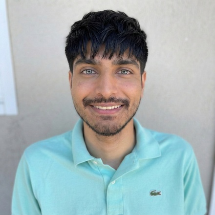
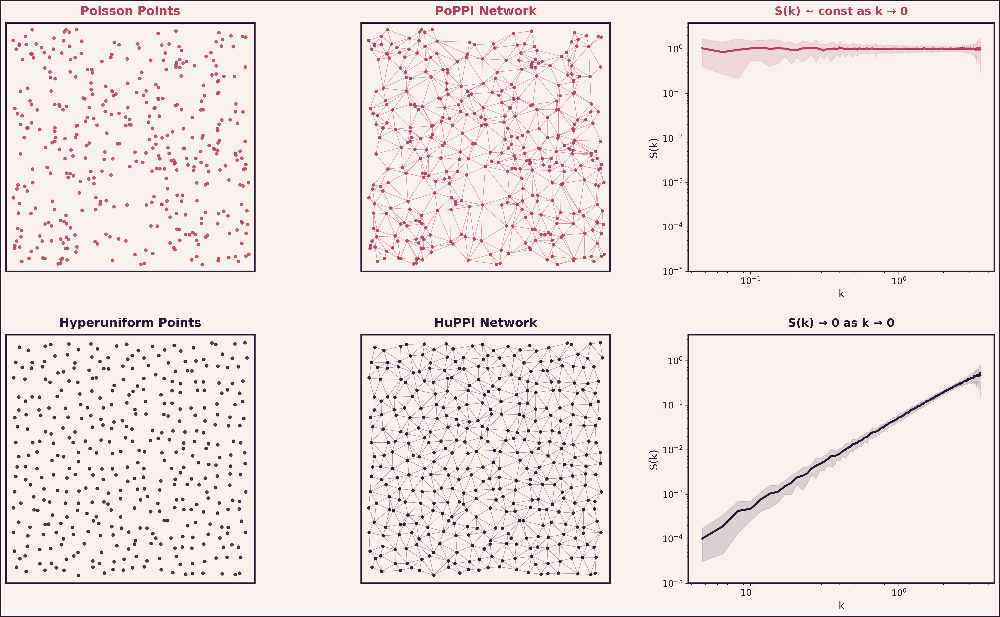
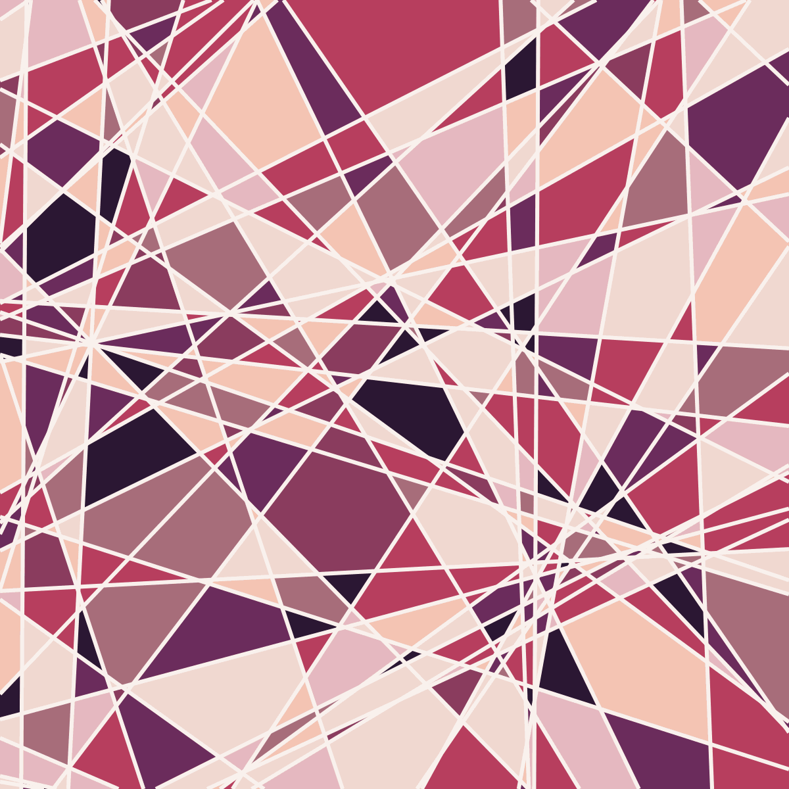
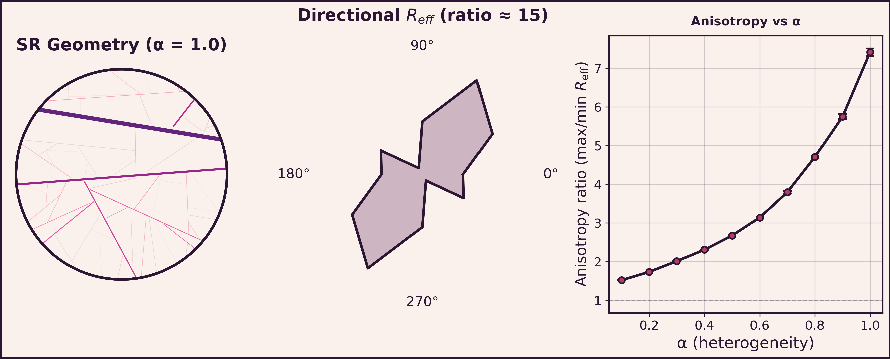
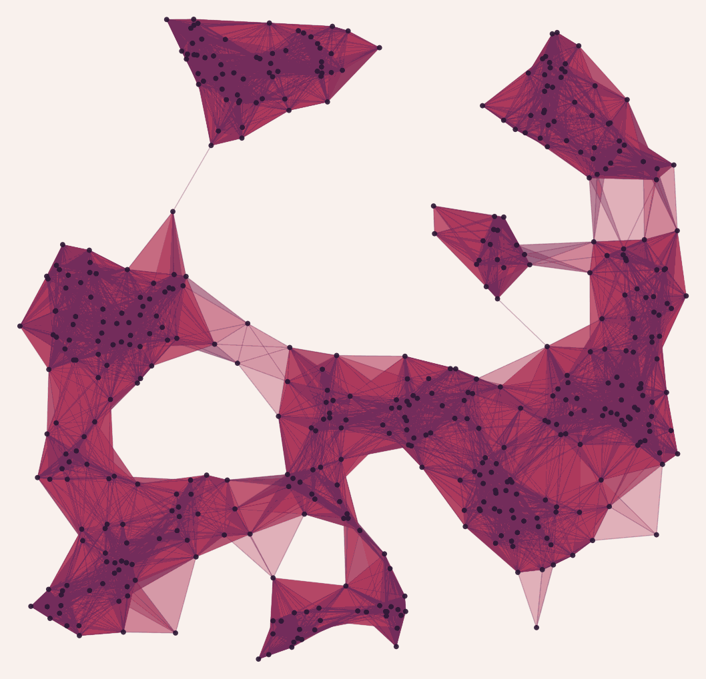
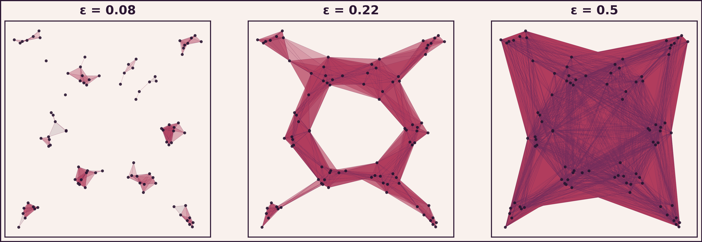
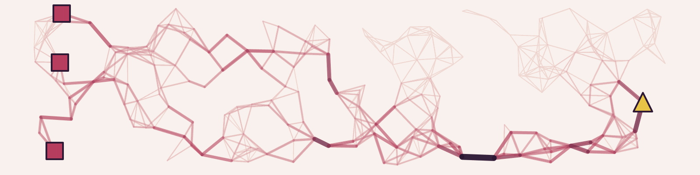
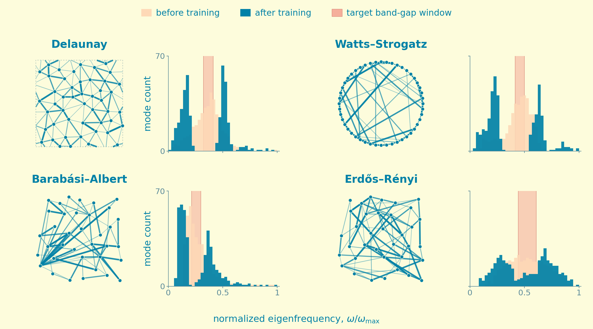

Physics PhD student at UCLA, advised by Mason Porter.

I am a 4th year Physics PhD student at UCLA working with Mason Porter. My research focuses on networks that arise from physical systems. For example, I study networks generated from hyperuniform point patterns, which are disordered arrangements of points that suppress large-scale density fluctuations (see figure below) and appear in settings ranging from leaf vein networks to the large-scale distribution of galaxies. I also study networks extracted from scale-rich metamaterials, which are engineered structures with elements spanning many length scales. I use tools from network science, topological data analysis (TDA), and statistical physics to understand how the structure and connectivity of these networks shape their transport and mechanical properties.
I am also interested in physical learning, where physical systems such as resistor networks are trained to perform computational tasks through local adaptation rules, and in persistent homology, a technique from TDA for detecting multi-scale structure in data.


Scale-rich network-based metamaterials (Both et al., 2025) are engineered structures built by placing ligaments with power-law-distributed thicknesses and lengths. I develop a novel network formulation for these structures, where edge weights correspond to axial conductances derived from beam mechanics, making the graph Laplacian equivalent to the mechanical stiffness matrix. Using this formulation, I derive analytic bounds on transport properties like directional effective resistance and anisotropy, and study Anderson-like localization in the Laplacian spectrum, where vibrational modes become spatially trapped as structural heterogeneity increases.

Directional effective resistance becomes increasingly anisotropic as the heterogeneity parameter α grows. Polar plots show Reff measured along 6 directions; the rightmost panel summarizes the anisotropy ratio (max/min Reff) across α values.

Topological data analysis (TDA) uses ideas from geometry and topology to find structure in data. We use TDA to detect clustering at multiple scales in spatial point patterns, such as distinguishing tightly packed clumps from loosely spread ones, and connect these topological signatures to classical physics measures of correlation and connectivity.

A clustered point pattern and its Vietoris-Rips simplicial complex at increasing filtration radius ε. As ε grows, local clusters connect and topological features (loops, voids) appear and disappear. Persistent homology tracks these changes.

Physical learning asks: can a physical system (like a network of resistors) learn to perform a task by adjusting itself locally, without a central controller? We study how the topology of the network affects its ability to learn, with the goal of connecting spectral and structural properties of the graph to learning performance. Ultimately, we want to understand whether the learning capacity of a network can be characterized by its topology alone, without ever training it.

Trained conductances (top) and learning curves (bottom) for three network topologies. Source nodes (coral squares) supply input voltages; target nodes (gold triangles) are where the network's output is read. Edge colors show trained conductance values, with low-conductance (effectively pruned) edges in coral. All three topologies converge, but at different rates.
I love baking! I make everything from sourdough and pizzas to croissants, brioche rolls, cookies, and all sorts of other things. I enjoy making a lot of the recipes from Claire Saffitz's YouTube channel. I'm also really into chess, both playing and watching. My peak rating is 2150 on Chess.com Rapid, though I try not to think about where it is right now.
Some of my favorite artists are yeule, Sufjan Stevens, Quadeca, Jane Remover, Porter Robinson, and Alex G. If I had to pick one album, it would be Sufjan Stevens' Carrie & Lowell. If you haven't listened to it, I'd really recommend it. See more of my favorite songs →
Office: Mathematical Sciences (MS) 7611